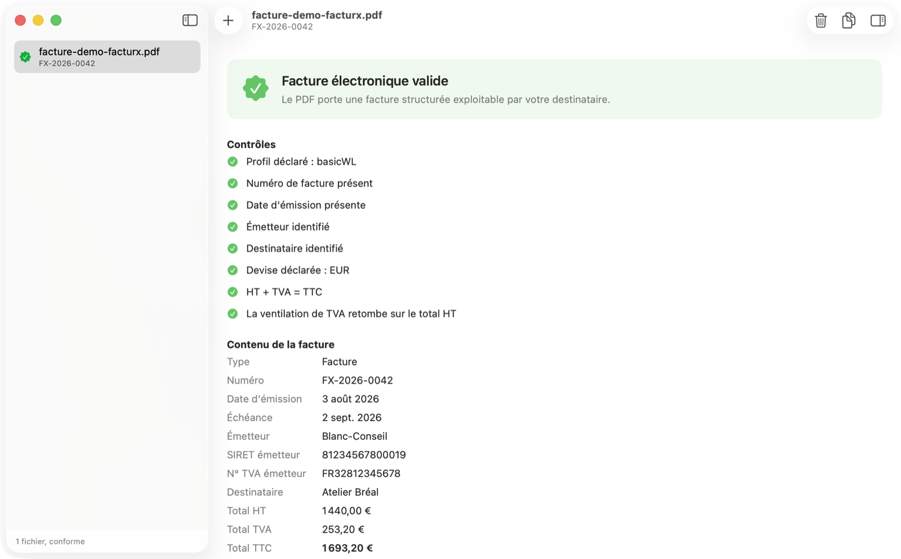
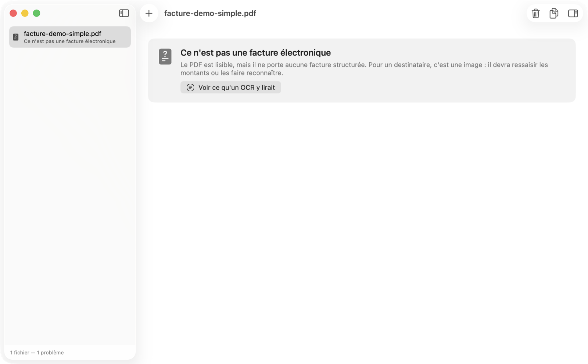
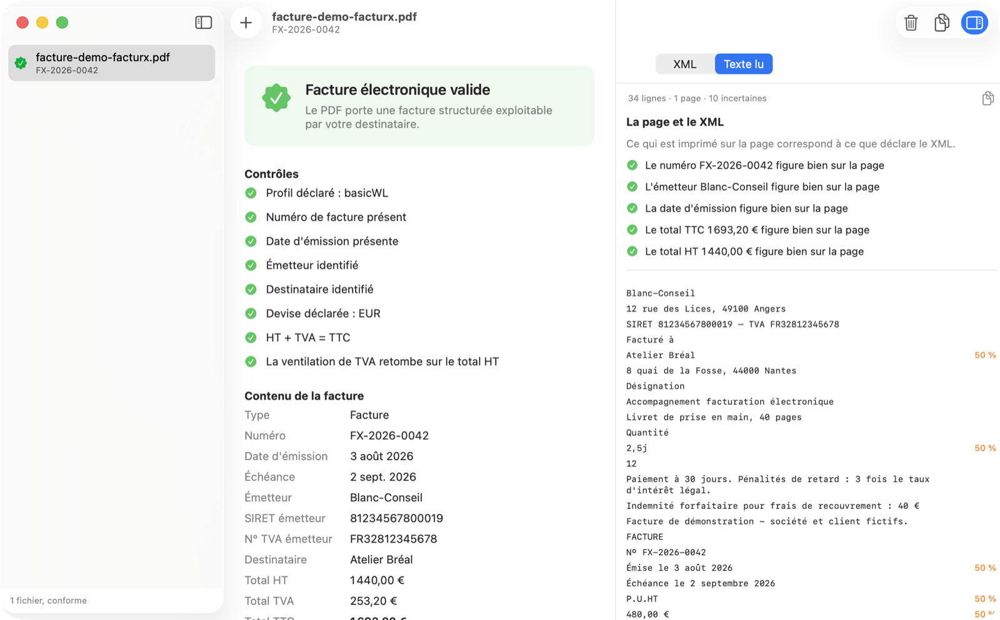
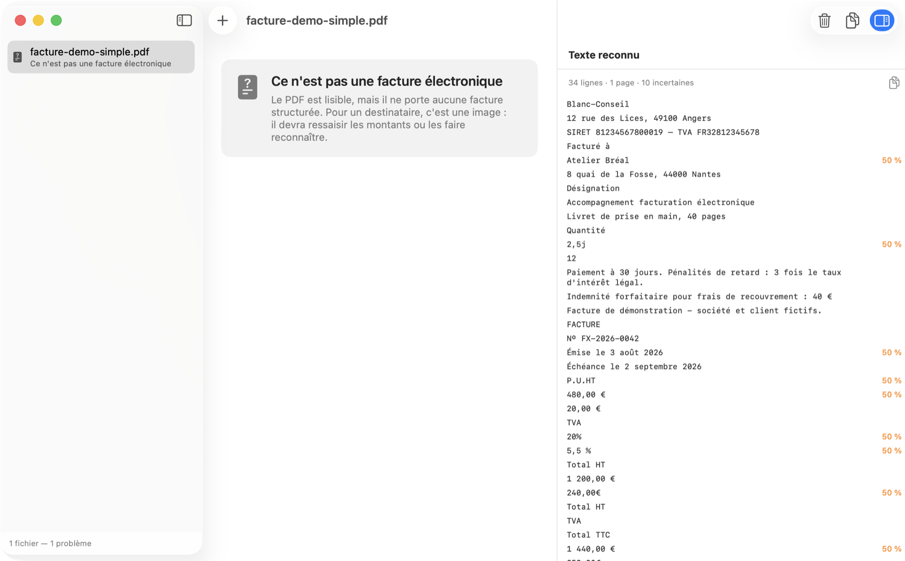

Vérifie qu'un PDF est bien une facture Factur-X — et dit ce qu'il contient.
À partir du 1er septembre 2026, toute entreprise française assujettie à la TVA doit savoir recevoir une facture électronique. Un PDF qui ressemble à une facture n'en est pas une : ce qui compte est invisible à l'écran, c'est un fichier XML embarqué dans le document.
Cet outil répond à la question qu'on se pose alors — mon fichier est-il exploitable, ou mon destinataire va-t-il devoir tout ressaisir ? Il existe en application Mac et en commande, avec les mêmes contrôles.




Une facture porte votre nom, celui de votre client et vos montants. Les validateurs en ligne demandent de la téléverser chez un tiers. Ici tout est analysé localement : l'application ne demande aucune autorisation réseau, ce qui se vérifie en inspectant ses droits plutôt qu'en me croyant sur parole.
Ce n'est pas un validateur de schéma complet : ni XSD, ni règles sémantiques EN 16931, ni conformité PDF/A-3. Pour une validation normative avant mise en production, passez par un validateur officiel. Cet outil répond à ce qui échoue en pratique, tout de suite et sans réseau.